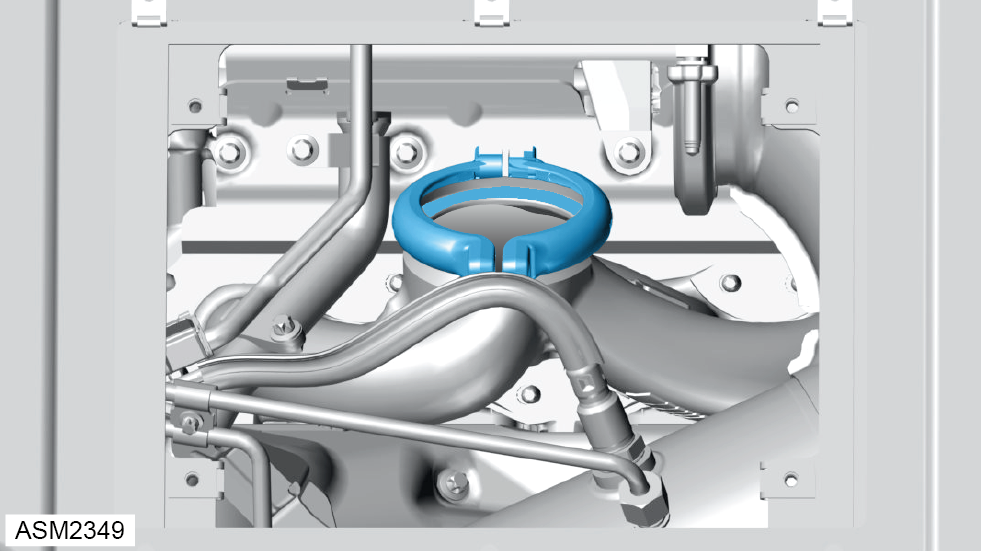

Gasket / Clamp - Turbocharger To Exhaust Manifold - 4 Cylinder
Print
Operation Code: 40.21.20-02
Removal
- Remove turbocharger. Refer to procedure.

- Loosen clamp. Torque 21 Nm.
- Remove and discard clamp.
- Remove and discard gasket.
Installation
- Installation is the reverse of removal procedure except for the following:
- Renew discarded gasket and clamp.